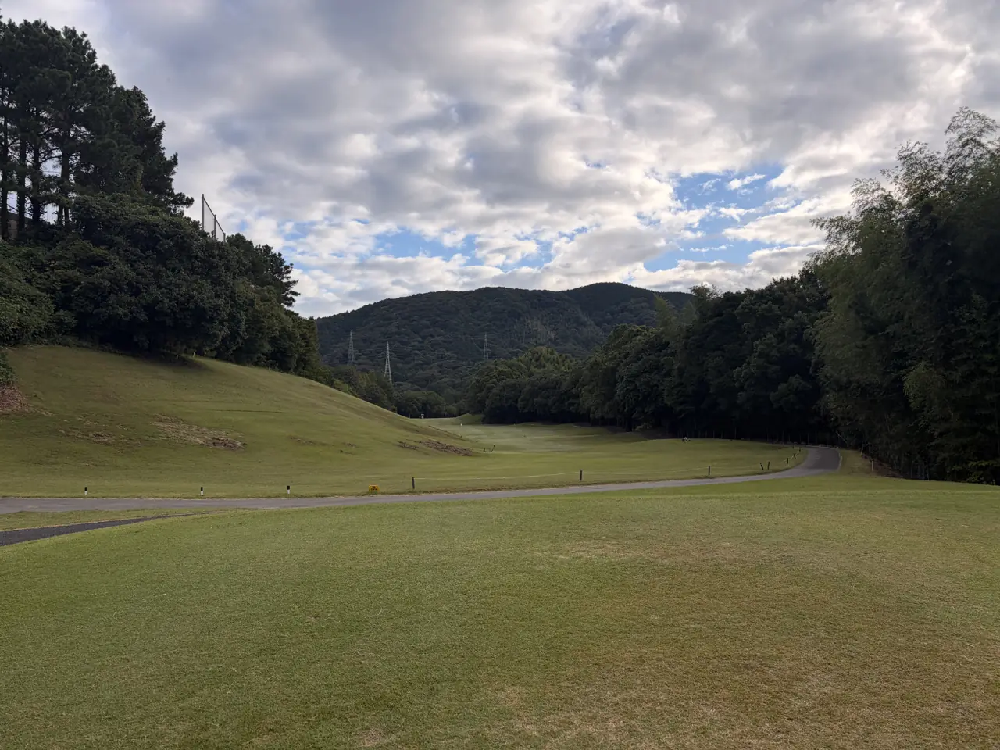

SNSで食事の話題が出ていたコースについて、各ゴルフ場の公式サイトのメニューを確認し、載っていた料理と価格だけをまとめました。SNSに上がった料理の写真は、公式の埋め込みで紹介しています（2026年11月28日確認）。
価格は公式サイトの表示どおりです。「記載なし」は、公式サイトに価格が載っていなかったものです。
| コース | 公式に載っている料理 | 価格 | 予約 |
|---|---|---|---|
| 志摩シーサイドカンツリークラブ糸島市 | 玄界灘産 天然鯛茶漬け 海鮮皿うどん | 記載なし 記載なし | 楽天GORA・じゃらん |
| 小郡カンツリー倶楽部小郡市 | 和牛とろろ丼 | 2,480円（税込） | 楽天GORA・じゃらん |
| トライアルゴルフ&リゾート WAKAMIYA COURSE宮若市 | 手作りジューシーハンバーグ定食（80g×3個） | 1,650円（税込） | 楽天GORA・じゃらん |
| 玄海ゴルフクラブ宗像市 | 玄界灘・真鯛 鯛茶漬け膳 若鶏の半身揚げ 特製海鮮ちゃんぽん | ¥2,200 ¥2,000 ¥1,750 | 公式サイトのみ |
| 芥屋ゴルフ倶楽部糸島市 | 鯛茶漬 海鮮丼 | 2,720円（税込） 2,300円（税込） | 公式サイトのみ |
上の3コースはじゃらん・楽天GORAで予約できます。玄海と芥屋はネットの予約サイトでは予約できないので、公式サイトへのリンクだけにしています。
出典：公式サイト（レストラン）（2026年11月28日確認）公式サイトに価格の記載はありません。
公式のレストランページは、海を望むクラブレストランとして紹介しています。
SNSでは：Instagramで、このコースの位置情報がついた投稿のうち、説明文で食事をほめていたものが3件、皿うどんの写真が1件ありました（編集部が2026年11月28日に確認）。
出典：公式サイト（レストラン）（2026年11月28日確認）
SNSでは：Threadsに「ランチは和牛とろろ丼」と書いた投稿がありました（2026年4月。写真はコースの看板とフェアウェイ）。
出典：公式サイト（レストラン）（2026年11月28日確認）ハンバーグ定食は、エビフライや唐揚げとの組み合わせなど数種類あります。
出典：公式サイト（レストラン）（2026年11月28日確認）公式サイトに税込かどうかの記載はありません。
予約はメンバー本人からの完全予約制です（公式）。ゲストは公式サイトのゲスト申込書で申し込みます。じゃらん・楽天GORAでは予約できません。
出典：公式サイト（レストラン）（2026年11月28日確認）鯛茶漬は持ち帰り用もあると公式に書かれています。
じゃらん・楽天GORAでは予約できません。予約は公式サイトか電話です。
投稿はInstagram・Threadsの公式埋め込みで紹介しています。表示されない場合は、元の投稿が削除されたか非公開になった可能性があります。掲載の取り下げは運営者のThreadsへご連絡ください（プライバシーポリシー）。
公式サイトでメニューを確認できなかったため、上の5コースとは分けて載せています。